|
2010年夏天西藏行（青藏线和318国道川藏南线）图片日记
day 10, 2010年7月26日
西藏八宿县 - 波密县
（续）
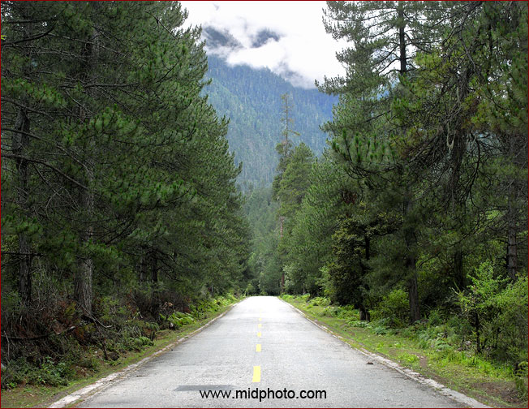
下午两点，进入波密县林区地带。两个小时前还在寸草不生的怒江峡谷砂石里爬行，一下子就在笔直的柏油路上飞奔，满眼的绿色摇你晃你，弹指之间恍如隔世。我想这也是318国道川藏南线的可爱之处吧。
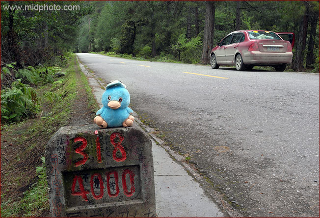
4000km
from shanghai, and 700km to Lhasa
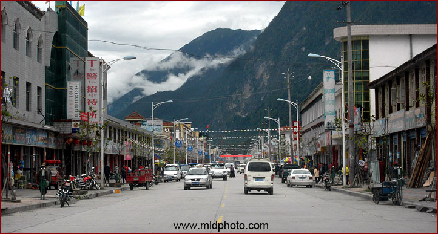
7月26日，下午2点10分，进入波密县城。这是一个繁华的大县（按西藏标准）。没想到的是，我会在波密停留如此之久，16天，一直到8月10日才最后离开。
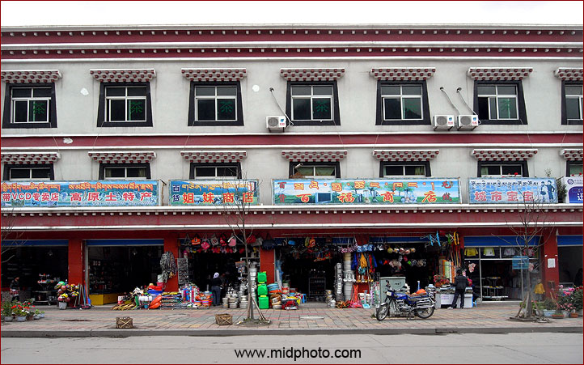
波密县，物资那是相当丰富
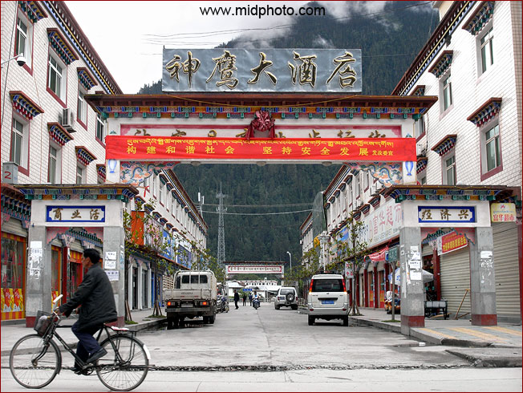
波密县。神鹰大酒店
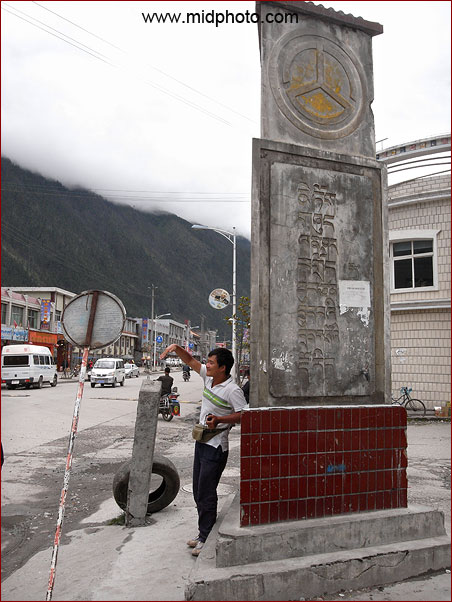
波密县城，墨脱公路纪念碑。墨脱曾经是中国唯一不通公路的县。但这已经是历史，从这右拐就可驶向墨脱县，虽然路况很差，不建议非越野车通行。
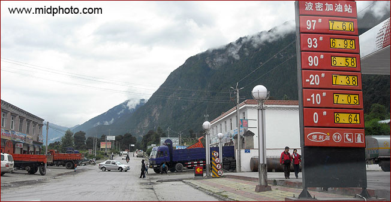
下午2点40，来到波密加油站，得到非常不好的消息，昨晚前方道路重大塌方，318国道已封闭，禁止一切车辆通行。油站小妹劝我赶紧返回县城，再晚一点可能连住处都难寻了。果不其然，没多远我们就被设岗的警察叔叔拦住，请我们回县城等待。
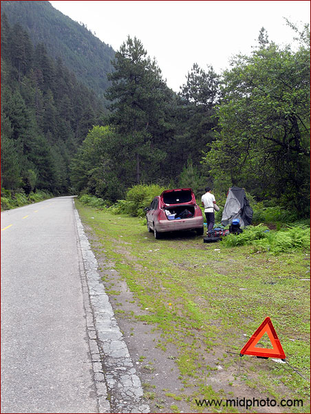
在西藏的沙土里奔波了一个星期，我突然想露营，在放眼皆绿的波密森林。我随车携带的帐篷和睡袋还没用过呢。大家都同意。于是我们返回县城，再往前开了几公里，找到一个适合搭帐篷的平地。地方很好，唯一就是涛声隆隆有点烦。这是路边的雅砻藏布江，塌方的罪魁祸首。
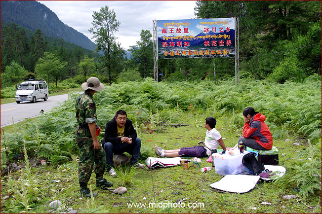
藏王故里，冰川之乡，绿海明珠，桃花世界，全国文明县城，波密。我们开始在这里野餐，发呆。
闲得实在无聊，拍点路边花草
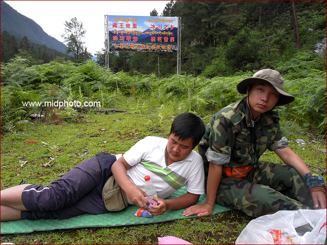
我的大学生朋友
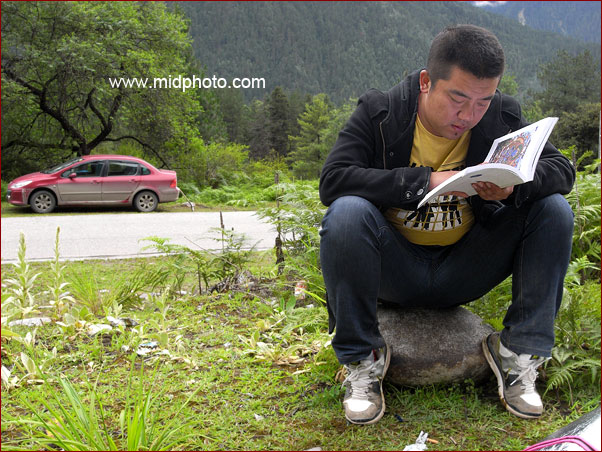
色达佛学院带来的书，美发师向往顿悟
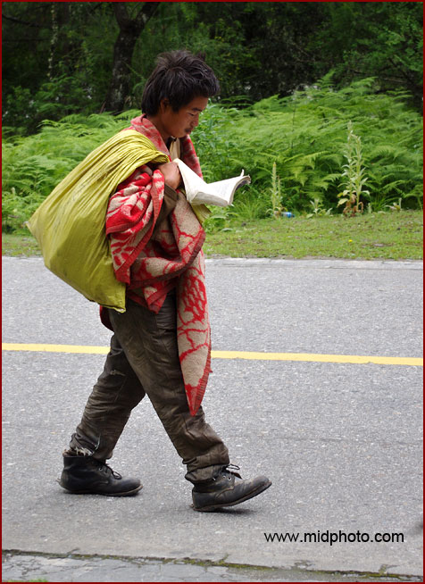
The Reader.
不一会儿，远远走来一位怪异的行者，披着破旧的毛毯，背着一个编织袋，手拿一本书，面无表情。在我连拍这几张照片的时候，他神情灌注地前行，都没看我一眼，完全无视周遭。在后来的几天，在古乡湖，我们连续的遇到他。小昊后来把他叫做“淡定哥”。
他从哪儿来？要到哪儿去？他也像我们一样去拉萨吗？他吃什么呢？晚上有地方住吗？我的心是沉重的。这位流浪者，和我们，到底谁是异常？这是一个怪异的世界，我欢愉的心，都随他的脚步远去。
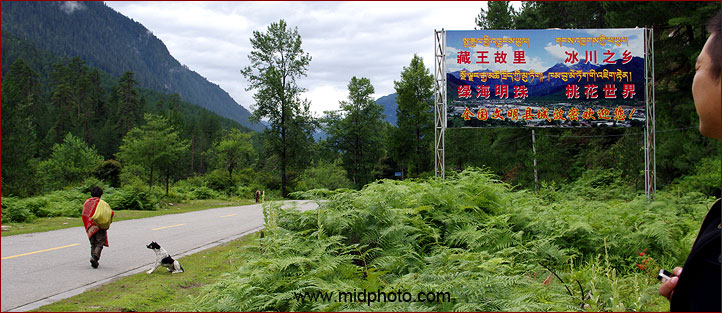
远去的读者
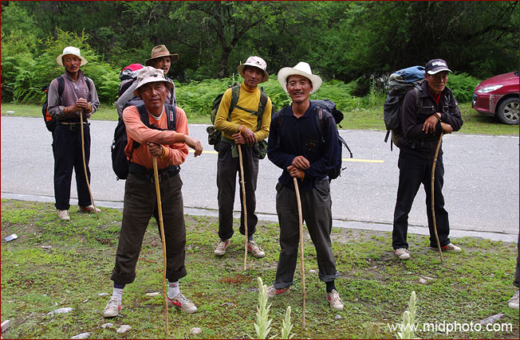
又过了一会儿，走来一群真正的行者。他们从康定出发，走了一个多月来到这里，他们是去拉萨的朝圣者
318国道，路边宿营。夜晚十点，30秒曝光。拍这张照片的时候，对面草丛中绿光闪闪，貌似狼啊，实在有点恐怖。还好我们有5个人。在雅砻藏布江的涛声中，我们慢慢睡去。
7月26日的深夜，忧郁的318国道（32）
day 11, 2010年7月27日
波密县（古乡湖）
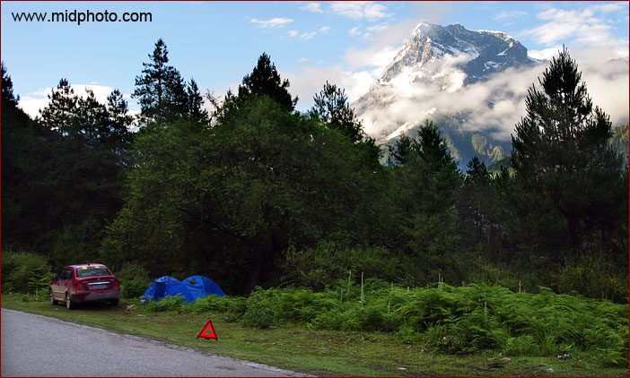
早上醒来，欣喜发现路边居然是雪山
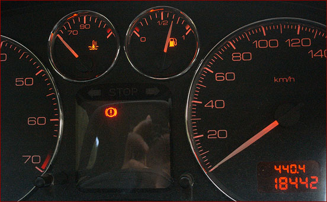
这是7月27日早上的里程表，18442。接下来十多天，这个数字都基本固定
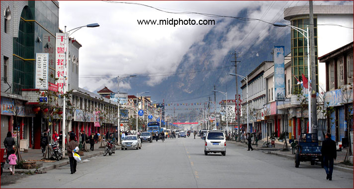
收好帐篷，进县城寻食
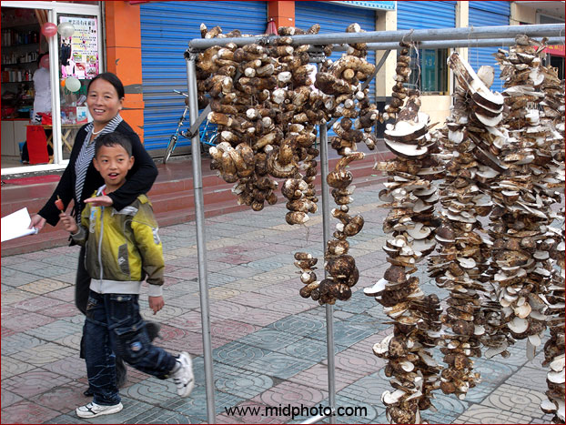
据说是野生蘑菇，波密特产之一
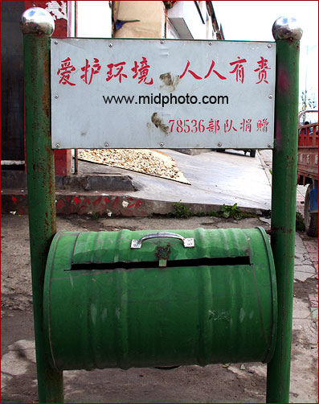
波密县城。78536部队赠送的汽油桶垃圾箱
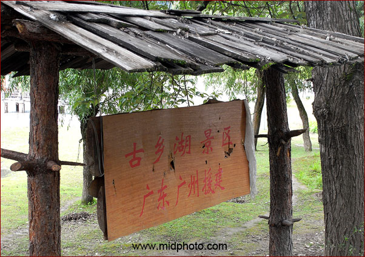
出县城的路口依然被警察拦住，好说了几句，被允许前往古乡湖一游。这个湖离县城约26公里，广州援建。
7月27日。上午的古乡湖。联合拍摄
7月27日。下午的古乡湖。联合拍摄
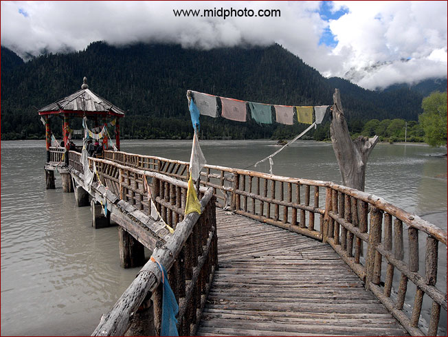
湖心亭
我心中的经幡。忧郁的318国道（33）
古乡湖，飞扬的经幡
欧珠和他的弟弟，古乡湖。联合拍摄
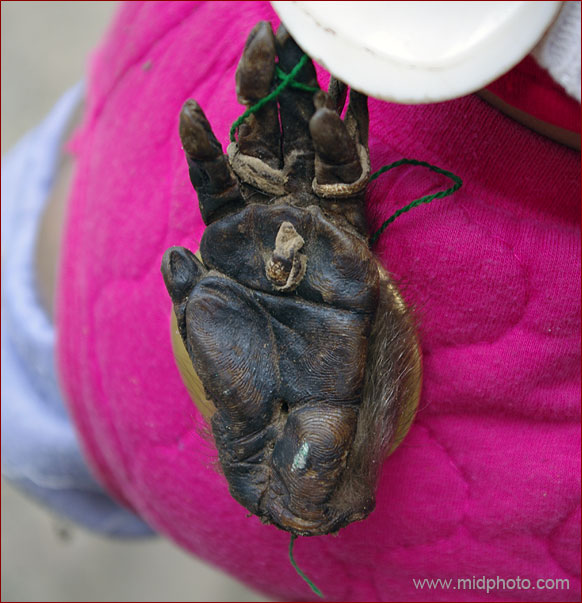
欧珠弟弟的后背上挂着一只猴子的手，据说能给小孩带来好运。联合拍摄
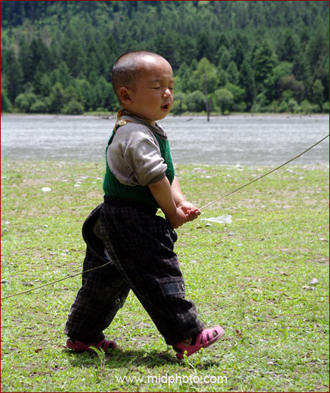
古乡湖，没有青梅，却有竹马
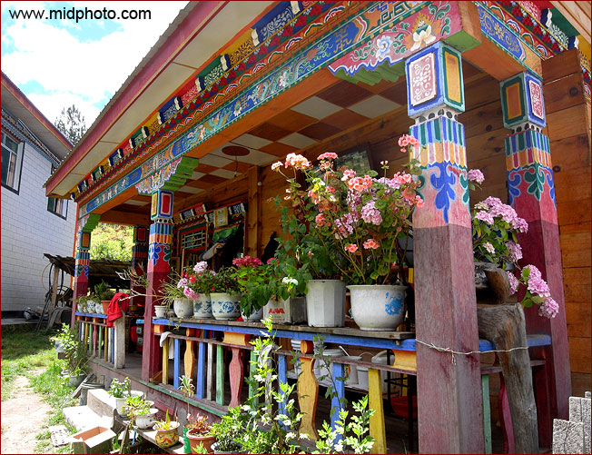
古乡藏民小卖店的花。古乡是波密县的一个镇。中午我们来镇上的小店采购面条和罐头，准备至少三天的粮食。我们决定就在古乡湖露营，节省费用，面朝雪山，游戏湖水，等待路通。这里离塌方点也更近一些，一旦路通我们可以第一时间通过。
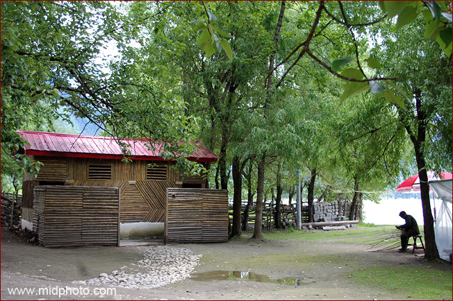
古乡湖这个小景区居然有一个水冲式厕所，收费一元，非常干净。还有一个看厕所的老人，没事的时候他就在那做点竹器活。虽然语言不通，但我很喜欢这位慈祥的藏族大爷。
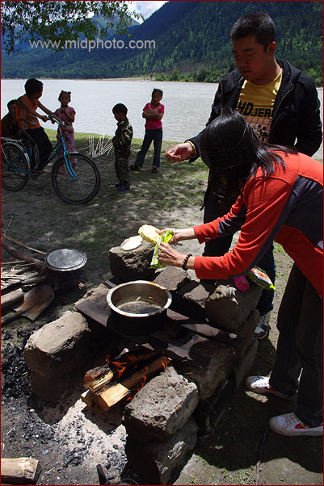
大爷非常慷慨的把锅碗都借给我们，让我们免费用他的柴火。我们把方便面和面条混煮，加点白菜，味道不错
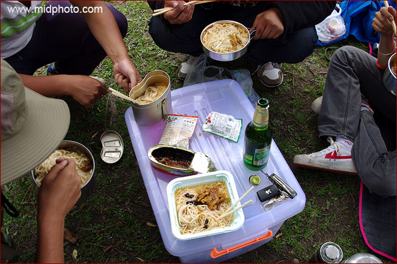
午餐
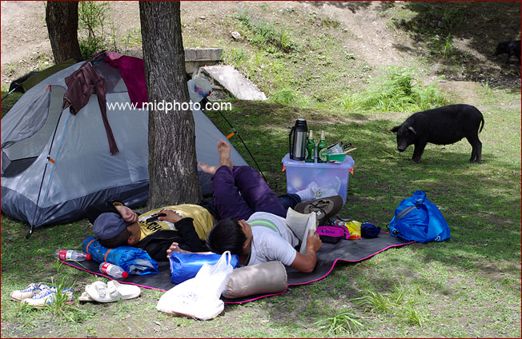
百无聊赖的享受藏地的阳光
古乡湖心情
快乐欧珠的忧郁时刻。联合拍摄
day 12, 2010年7月28日
波密县（古乡湖）
7月28日早上，古乡湖
隐隐有些不安，我不知道到底需要多久这路才能修好。决定去塌方处看看
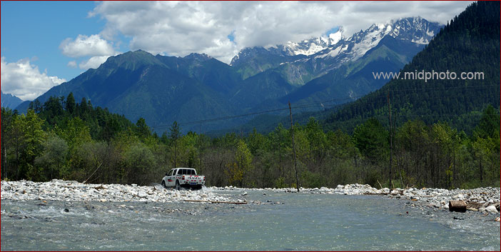
前行没多久，遇到类似小河的水毁路段。还好水不深。离塌方处还有一公里，兵大哥不让去看。路什么时候能通？消息满天飞，让人迷惑和不安，说什么的都有，有说三天的，有说一个月的。
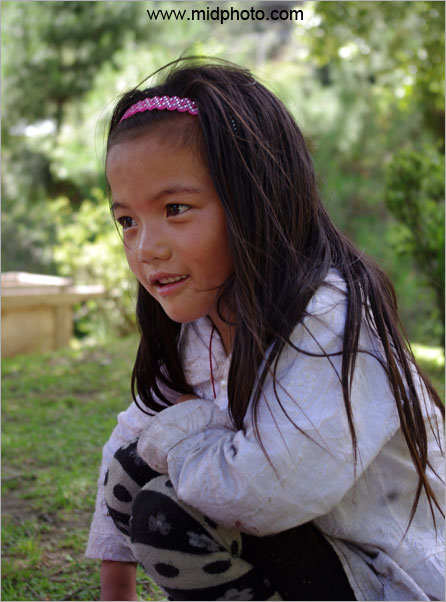
古乡湖人物，村里的小妹
古乡湖人物，我。
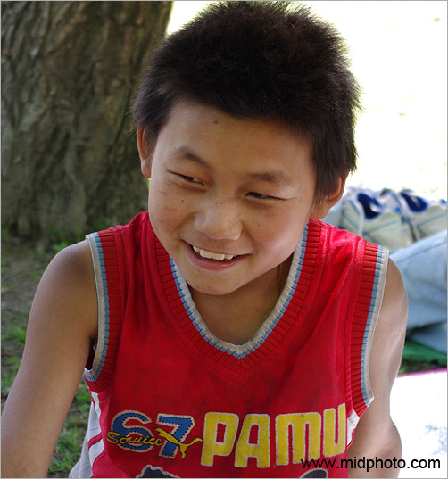
古乡湖人物，村里的孩子1
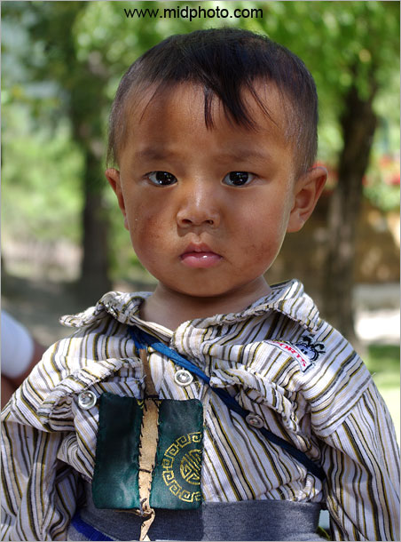
古乡湖人物，村里的孩子2
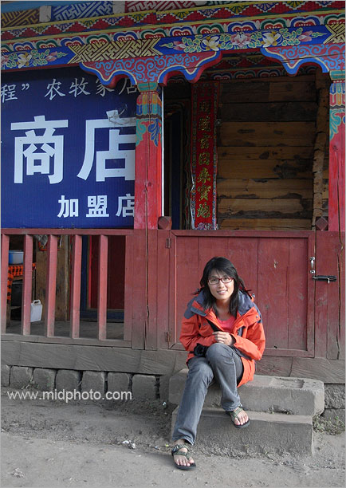
古乡湖人物，小言
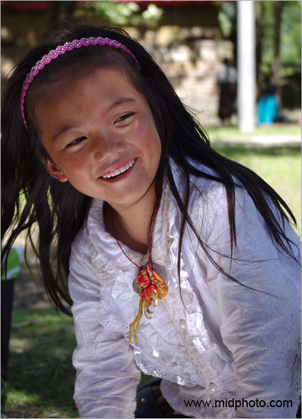
古乡湖人物，村里的小妹2
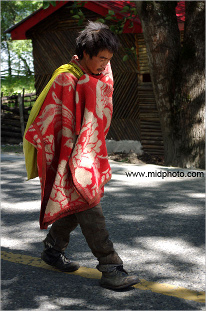
古乡湖人物，行者。不到40公里路，他走了两天，但今天，他的书不见了
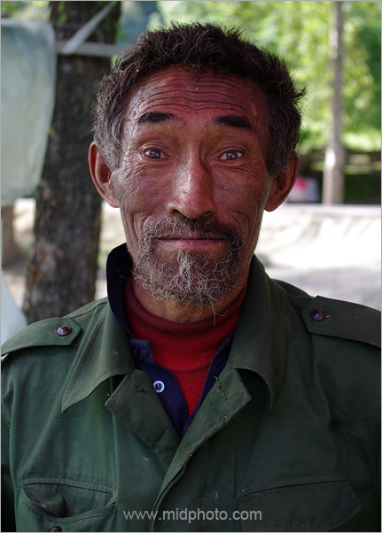
古乡湖人物，看守厕所的爷爷
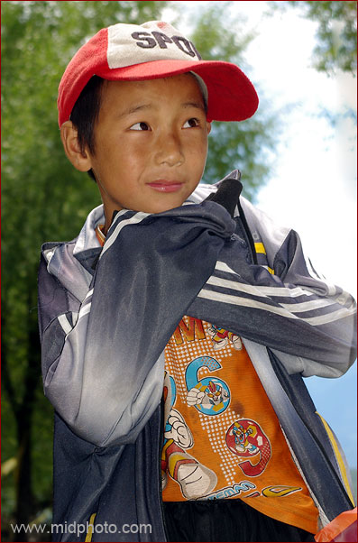
古乡湖人物，欧珠
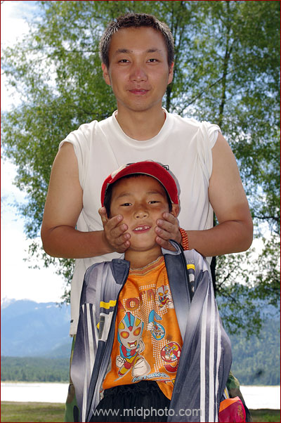
古乡湖人物，小姜和欧珠。小姜是我们的帅哥，也是最受村里孩子们欢迎的人
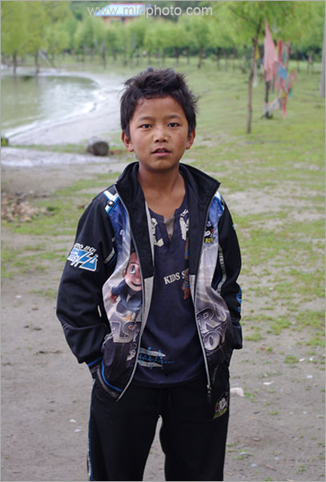
古乡湖人物，村里的孩子3
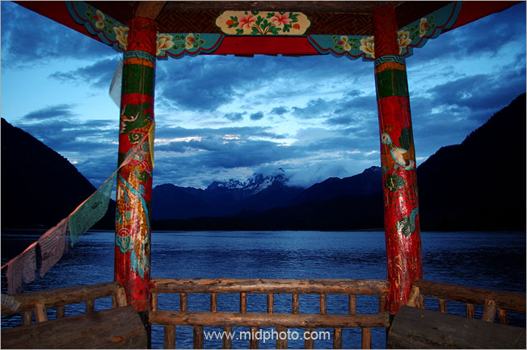
古乡湖，湖心亭的傍晚
古乡湖的傍晚。忧郁的318国道（34）
day 13, 2010年7月29日
波密县（古乡湖）
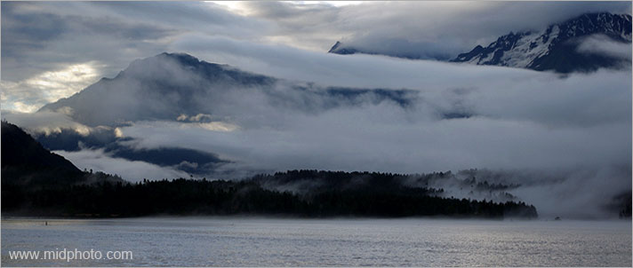
7月29日早上的古乡湖
待续
|